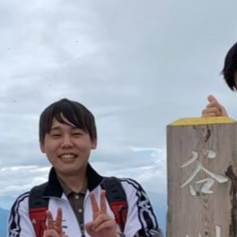

Environmental Engineering Researcher
I am an environmental engineering researcher working on drinking water treatment. My research focuses on understanding the mechanisms that control contaminant removal and particle separation, and on using that understanding to improve water treatment processes.
Postdoctoral Research Scholar
Department of Civil, Construction, and Environmental Engineering
North Carolina State University